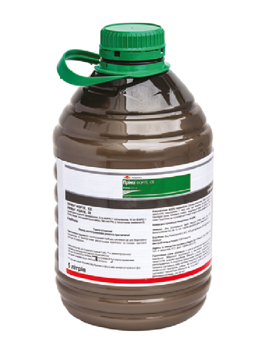

Перша серед кращих
паспорт препарату
Пріма™ Форте 195 , с. е.
5 г/л флорасуламу, 10 г/л амінопіраліду, 180 г/л 2,4–Д у формі етилгексилового ефіру в кислотному еквіваленті
Триазолпіримідини, похідні піридинкарбонової кислоти, похідні арилоксиалканкарбонової кислоти
Суспензійна емульсія
Середньотоксичний Класифікація ВООЗ: ІІІ
5 л
Фото упаковки

головні переваги препарату
- Ефективність 90–100 % проти широкого спектра бур'янів, особливо падалиці соняшнику (+ сульфо-, ІМІ-), амброзії, видів осоту, сокирок, гірчаків, маку, лободи
- Ґрунтовий контроль нових сходів бур’янів, особливо падалиці соняшнику (+ сульфо-, ІМІ-) та амброзії
- Стабільна ефективність у складних погодних умовах
- Швидке проникнення системних діючих речовин миттєво зупиняє ріст бур’янів
Застосування препарату
ОЗИМА ПШЕНИЦЯ, ЯРИЙ ЯЧМІНЬ, КУКУРУДЗА
Спектр дії
Фаза внесення
Норма витрати, л/га
Кратність обробок / Термін очікування
Терміни виходу
на стадії реєстрації
ЯЧМІНЬ ОЗИМИЙ, ПШЕНИЦЯ ЯРА, ОВЕС, ЖИТО, ПРОСО, СОРГО
Спектр дії
Фаза внесення
Норма витрати, л/га
Кратність обробок / Термін очікування
Терміни виходу
Сумісність
Препарат сумісний із фунгіцидами, інсектицидами, протидводольними гербіцидами, рідкими азотними добривами та регуляторами росту рослин. Сумісний із грамініцидами на основі ізопротурону і хлортолурону. Несумісний із грамініцидами на основі феноксапропу, клодинафоп-пропаргілу та диклофопу. При використанні препаратів у бакових сумішах слід також враховувати регламенти застосування іншого(-их) препарату(-ів), що додає(ю)ться до суміші (термін застосування, культури тощо). Перед приготуванням робочої суміші рекомендується перевірити змішуваність препаратів у невеликій посудині.
Сумісний з фунгіцидами Амістар Екстра, Амістар Тріо, Тілт, Тілт Турбо, Альто Супер, інсектицидами Енжіо, Карате Зеон, регулятором росту Норма витрати, л/га.
Температура застосування
Препарат починає працювати уже при середньодобовій температурі +5 °С, але при цьому його дія може бути повільніша. Оптимальна температура для застосування препарату — в межах від +8 до +25 °С.
Важливо! Не застосовуйте препарат одразу після заморозків або якщо заморозки очікуються в ніч після обробки.Рекомендована норма витрати робочого розчину
50–400 л/га
Особливості застосування продукту
Препарат не викликає пошкоджень або зниження врожаю культурних рослин при його застосуванні від стадії кущіння до стадії двох міжвузлів у культурної рослини. Найчутливіші до дії препарату рослини сприйнятливих видів бур'янів у стадії розвитку від 2-х до 8-ми справжніх листків, також ефективний по сім'ядолях бур'янів. Препарат містить діючі речовини з різним механізмом дії, що дозволяє досягти надійного рівня контролю у разі змішаної забур'яненості. Рекомендована норма витрати препарату залежить від типу забур’яненості, стадії розвитку бур’янів, густоти культурних рослин та кліматичних умов до, під час і після обприскування. Вищу з рекомендованих норму слід застосовувати у разі пізніх стадій розвитку бур’янів, високої забур’яненості посівів багаторічними бур’янами, на зріджених посівах, у разі тривалого періоду з прохолодною погодою та при пізній обробці культури (у фазі двох міжвузлів у культурних рослин). Для досягнення максимальної ефективності препарат слід наносити рівномірно на листову поверхню рослин, застосовуючи добре відрегульоване обладнання. Рекомендується застосовувати щілинні (плоскоструменеві) розпилювачі, які забезпечують середній розмір крапель при обприскуванні.
Обмеження щодо сівозміни
Після застосування гербіциду Пріма™ Форте на посівах зернових на тому самому полі як наступні культури можна вирощувати:
- через 1 місяць: зернові, кукурудзу, сорго (у разі потреби пересіву);
- восени цього року (після весняного застосування): озимі зернові, озимий ріпак, злакові трави;
- при нормі витрати 0,5 л/га навесні наступного року: ярі зернові, ярий ріпак, кукурудзу, сорго, соняшник, картоплю, люцерну, цибулю, цукрові буряки, льон, капусту;
- при нормі витрати щонайменше 0,7 л/га та при опадах не менше як 300 мм за цей період через 11 місяців: ярі зернові, ярий ріпак, кукурудзу, сорго, соняшник, картоплю, цибулю, цукрові буряки, льон, капусту;
- не раніше ніж через 14 місяців: сочевицю, нут, сою, кормові боби, горох, моркву, люцерну.
У разі потреби пересівання після застосування препарату на тому самому полі можна вирощувати кукурудзу, сорго, ярі зернові, трави. При цьому перед пересівом треба провести глибоку оранку.
Застереження:
- Не проводити обприскування, якщо очікуються заморозки
- Не застосовувати препарат на зернових із підсівом конюшини, люцерни або інших бобових
- Не допускати знесення робочого розчину препарату на сусідні поля, зайняті під чутливими дводольними культурами
Обмеження щодо соломи й рослинних решток
Солому і рослинні рештки слід залишити на полі і якомога раніше після збирання врожаю загорнути в ґрунт на глибину не менше як 10 см за допомогою оранки, культивації, дискування. Після загортання соломи в ґрунт, щоб вона повністю розклалася, треба витримати щонайменше 4 місяці за умови активного мікробіологічного розкладу до посіву чутливих культур навесні наступного року. Препарат у рослинних рештках розкладається швидше в теплому й вологому ґрунті, розклад можна пришвидшити додатковим зрошенням.
Обмеження щодо сівозміни